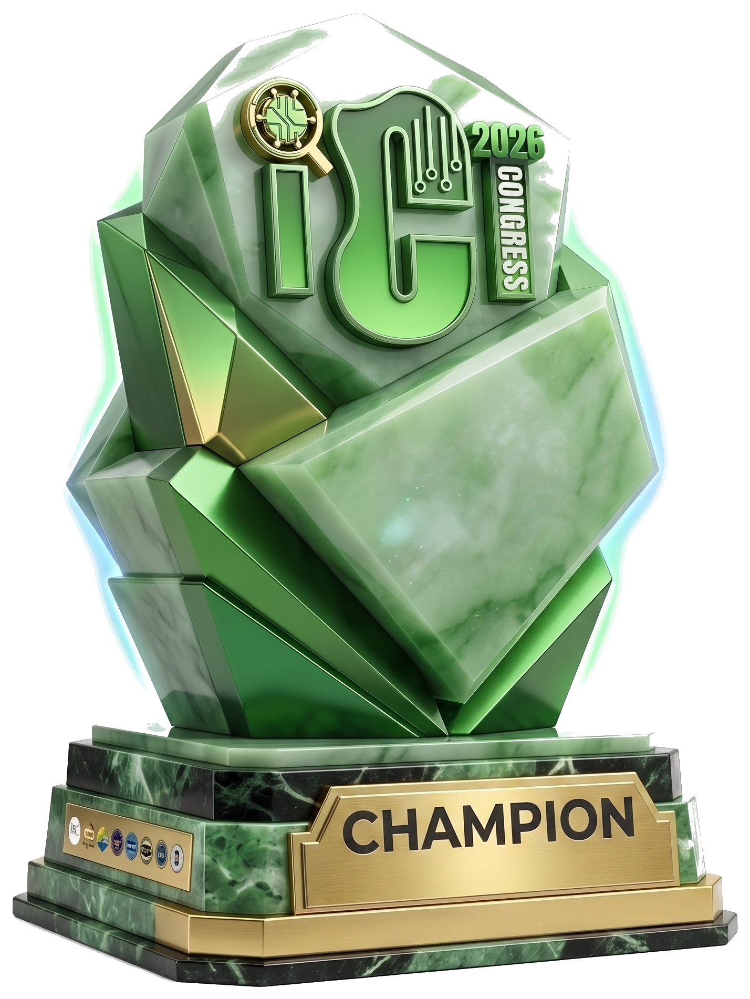

01 / Champions
Team FIRA on the Congress stage — certificates in hand, the whole
College of Computer Studies behind them.
Competing as Team FIRA for the University of Cebu – Banilad, VERPTO's Eijay Pepito and Jashmine Verdida — with Kenji Parilla and Joan Joy Diocampo — won the Lightning Pitch Competition at the 12th UC ICT Congress, out-pitching every other University of Cebu campus on the New Cebu Coliseum stage.

// the win that started the streak
The 12th UC ICT Congress 2026, hosted by the University of Cebu College of Computer Studies under the theme "Innovating the Future: Empowering Society Through Intelligent Technologies," gathered the brightest tech minds across every UC campus for a day of keynotes, tech talks, and competition on April 22, 2026 at the New Cebu Coliseum. Its headline event: the Lightning Pitch Competition — a rapid-fire, clock-ticking format where each campus gets mere moments on stage to sell a real idea to the judges.
Representing the University of Cebu – Banilad, Team FIRA pitched exactly that: Project FIRA, a community-driven fire incident reporting platform built to get validated, geotagged emergencies in front of responders faster. With Eijay Pepito on the mic as pitcher and Jashmine Verdida running the slides and tech from the wings — backed by teammates Kenji Parilla and Joan Joy Diocampo — the team turned a serious problem into a tight, convincing story in the seconds the format allowed.
Up against the other University of Cebu campuses — UC-Main, UC Lapu-Lapu & Mandaue, and UC-PT — Banilad came out on top. Team FIRA was named Champion of the Lightning Pitch Competition, judged by Mr. Jomar Colao, President & CEO of True Staff Philippine Management Inc.
Chronologically, this was VERPTO's first championship of 2026 — the spark that kicked off a season that would go on to include LAMBO and PSITE. And Project FIRA, the idea at the heart of this win, is featured in full over in our Projects gallery.
> 4 campuses · 1 crown · banilad_
The crew that out-pitched every UC campus can build and sell your idea too. Let's talk.
Work With Us